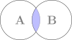
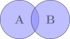
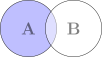
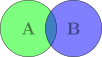
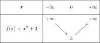
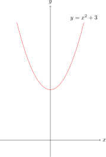
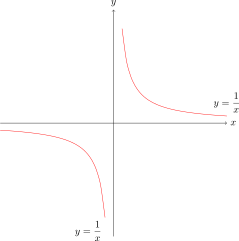

1. Đại cương về tập hợp¶
Tập hợp là khái niệm nền tảng, có mặt trong hầu khắp các ngả rẽ của toán học. Mình có dịp đọc quyển Toán học qua các câu chuyện về tập hợp của Tủ sách Sputnik [1], dịch từ quyển Рассказы о множествах của Виленкин Н.Я. [2] và thấy những câu chuyện rất thú vị. Nếu hứng thú các bạn có thể tìm đọc.
1.1. Tập hợp¶
1.1.1. Mở đầu về tập hợp¶
Một tập hợp (set) bao gồm các phần tử khác nhau. Tập hợp là khái niệm cơ sở cho nhiều vấn đề của toán học. Tuy nhiên chúng ta lại không có một định nghĩa chặt chẽ về tập hợp mà chỉ có thể biểu diễn nó. Để biểu diễn tập hợp ta có hai cách.
Liệt kê. Ví dụ \(A = \{ 1, 2, 3, 4 \}\), \(B = \{ a, b , c \}\).
Sử dụng tính chất đặc trưng. Ví dụ \(A = \{ a \in \mathbb{N}^* : a < 5 \}\).
Ở đây hai cách biểu diễn tập hợp \(A\) là giống nhau.
Định nghĩa 1.1 (Tập hợp rỗng)
Tập hợp rỗng không chứa phần tử nào, kí hiệu là \(\emptyset\).
Định nghĩa 1.2 (Tập hợp con)
Xét tập hợp \(A\). Tập hợp \(B\) được gọi là tập hợp con của tập \(A\) nếu mọi phần tử của \(B\) đều nằm trong \(A\). Nói cách khác với mọi \(b \in B\) thì \(b \in A\). Ta kí hiệu \(B \subset A\).
Chú ý 1.1
Tập hợp rỗng là con của mọi tập hợp.
Dễ thấy rằng mọi tập hợp là tập hợp con của chính nó. Do đó tập con này được gọi là tập con tầm thường (trivial subset). Để kí hiệu một tập con có thể bằng tập chứa nó ta viết \(B \subseteq A\). Trong trường hợp \(B\) là tập con của \(A\) nhưng không bằng \(A\) ta có thể viết \(B \subsetneq A\).
1.1.2. Toán tử trên tập hợp¶
Chúng ta xem xét ba toán tử cơ bản trên tập hợp là giao, hợp và hiệu của hai tập hợp. Để biểu diễn các toán tử này ta có thể dùng biểu đồ Venn.
Định nghĩa 1.3 (Giao của hai tập hợp)
Giao của hai tập hợp \(A\) và \(B\) là tập hợp các phần tử thuộc cả \(A\) và \(B\).

Hình 1.1 Phép giao hai tập hợp¶
Hình 1.1 là biểu đồ Venn tương ứng của phép giao hai tập hợp. Khi giao của hai tập hợp \(A\) và \(B\) là rỗng thì ta nói hai tập rời nhau. Kí hiệu \(A \cap B = \emptyset\).
Định nghĩa 1.4 (Hợp của hai tập hợp)
Hợp của hai tập hợp \(A\) và \(B\) là tập hợp các phần tử thuộc \(A\) hoặc \(B\).
Hình 1.2 là biểu đồ Venn tương ứng của phép hợp hai tập hợp.

Hình 1.2 Phép hợp hai tập hợp¶
Định nghĩa 1.5 (Hiệu của hai tập hợp)
Hiệu (hay phần bù) của tập hợp \(A\) đối với tập hợp \(B\) là tập hợp các phần tử thuộc \(A\) nhưng không thuộc \(B\).
Hình 1.3 là biểu đồ Venn tương ứng của hiệu hai tập hợp.

Hình 1.3 Phép hiệu hai tập hợp¶
1.2. Lực lượng của tập hợp¶
Để chỉ số lượng phần tử của một tập hợp ta dùng khái niệm lực lượng của tập hợp.
Kí hiệu lực lượng của tập hợp \(A\) là \(\lvert A \rvert\) hoặc \(\# A\).
Khi một tập hợp có vô số phần tử, ta gọi đó là tập vô hạn. Ngược lại ta gọi là tập hữu hạn.
Ví dụ 1.1
Các tập hợp số thông dụng \(\mathbb{N}\), \(\mathbb{Z}\), \(\mathbb{Q}\), \(\mathbb{R}\) là các tập vô hạn.
Tập hợp \(A = \{ 1, 2, 3, 4, 5 \}\) là tập hữu hạn có \(5\) phần tử. Kí hiệu \(\lvert A \rvert = 5\).
Từ biểu đồ Venn chúng ta cũng có thể tìm được công thức tính lực lượng của tập \(A \cup B\).

Hình 1.4 Nguyên lý bù trừ cho hai tập hợp¶
Dựa vào hình ta có thể suy ra công thức sau:
1.3. Ánh xạ¶
[TODO] Viết lại ánh xạ dựa trên một giáo trình chuẩn.
1.3.1. Ánh xạ¶
Cho hai tập hợp \(X\) và \(Y\).
Nói đơn giản, ánh xạ \(f\) biến một phần tử \(x \in X\) thành một và chỉ một phần tử \(y \in Y\).
Định nghĩa 1.6 (Ánh xạ)
Một ánh xạ \(f\) từ tập \(X\) đến tập \(Y\) là một quy tắc đặt tương ứng mỗi phần tử \(x\) của \(X\) với một (và chỉ một) phần tử của \(Y\). Phần tử này được gọi là ảnh của \(x\) qua ánh xạ \(f\) và được kí hiệu là \(f(x)\).
Tập hợp \(X\) được gọi là tập xác định của \(f\). Tập hợp \(Y\) được gọi là tập giá trị của \(f\).
Ánh xạ \(f\) từ \(X\) đến \(Y\) được kí hiệu là \(f: X \to Y\) hoặc \(f(x) = y\).
Cho \(a \in X\) và \(y \in Y\). Nếu \(f(a) = y\) thì ta nói \(y\) là ảnh của \(a\) và \(a\) là nghịch ảnh của \(y\) qua ánh xạ \(f\).
Chú ý
Mỗi phần tử \(a\) của \(X\) chỉ có một ảnh duy nhất (là phần tử \(f(a)\)).
Mỗi phần tử \(y\) của \(Y\) có thể có nhiều nghịch ảnh hoặc không có nghịch ảnh nào.
Tập
được gọi là tập ảnh của \(f\).
Như vậy, tập ảnh \(f(X)\) là tập tất cả phần tử của \(Y\) có nghịch ảnh.
Ánh xạ có ba loại:
Đơn ánh (hay Injection): Hai phần tử khác nhau của tập nguồn cho hai ảnh khác nhau, tức là với mọi \(x_1, x_2 \in X\) mà \(x_1 \neq x_2\), thì \(f(x_1) \neq f(x_2)\).
Toàn ánh (hay Surjection): Mọi phần tử \(y \in Y\) đều có ít nhất một phần tử \(x \in X\) mà \(f(x) = y\). Nói cách khác với mỗi phần tử trong \(Y\) ta đều tìm được phần tử thuộc \(X\) biến thành nó.
Song ánh (hay Bijection): Nếu ánh xạ đó vừa là đơn ánh, vừa là toàn ánh.
Dựa vào định nghĩa và hình vẽ, ta có thể rút ra kết luận như sau
Đối với đơn ánh, do mọi phần tử của \(X\) đều có ảnh ở \(Y\), tuy nhiên có thể có phần tử ở \(Y\) không do phần tử nào của \(X\) biến thành (trong hình là \(5\)). Do đó \(\lvert X \rvert \leqslant \lvert Y \rvert\).
Đối với toàn ánh, mọi phần tử của \(Y\) đều có nguồn gốc xuất xứ, tuy nhiên có thể có phần tử của \(X\) không biến thành \(y\) nào của \(Y\) (trong hình là \(e\)). Do đó \(\lvert X \rvert \geqslant \lvert Y \rvert\).
Đối với song ánh, do là kết hợp giữa đơn ánh và toàn ánh, khi đó dấu đẳng thức xảy ra, \(\lvert X \rvert = \lvert Y \rvert\).
Hình 1.5 Đơn ánh¶
Hình 1.6 Toàn ánh¶
Hình 1.7 Song ánh¶
Cho song ánh \(f : X \to Y\). Khi đó với mỗi \(y \in Y\) tồn tại duy nhất một phần tử \(x \in X\) mà \(f(x) = y\).
Phần tử duy nhất \(x \in X\) này được gọi là ảnh của phần tử \(y \in Y\) qua ánh xạ ngược của \(f\).
Định nghĩa 1.7 (Ánh xạ ngược của song ánh)
Ánh xạ ngược của \(f: X \to Y\), kí hiệu là \(f^{-1}\) là ánh xạ từ \(Y\) tới \(X\) biến phần tử \(y \in Y\) thành phần tử \(x \in X\) duy nhất, như vậy
Như vậy, nếu \(f\) không phải song ánh thì chúng ta không thể xác định ánh xạ ngược.
Ví dụ 1.2
Xét hàm số \(f: \mathbb{R} \to \mathbb{R}\), \(x \to y = f(x) = x^3\).
Lúc này, \(f\) là song ánh và mình có thể biểu diễn \(x\) theo \(y\) là \(x = f^{-1}(y) = \sqrt[3]{y}\).
Định nghĩa 1.8 (Ánh xạ hợp)
Xét hai ánh xạ \(f: X \to Y\), \(f(x) = y\) và \(g: Y \to Z\), \(z = g(y)\). Ánh xạ hợp của \(g\) và \(f\) được kí hiệu là
Định nghĩa 1.9 (Tích Descartes)
Tích Descartes của hai tập hợp \(A = \{ a_1, a_2, \cdots, a_n \}\) và \(B = \{ b_1, b_2, \cdots, b_m \}\) là tập hợp
Ví dụ 1.3
Với \(A = \{1, 2, 3\}\) và \(B = \{ 4, 5 \}\) thì tích Descartes là
Với nhiều tập hợp ta định nghĩa tich Descartes tương tự.
Ví dụ 1.4
Xét ba tập nguồn \(X\), \(Y\), \(Z\), và tập đích là \(T\), ánh xạ \(\phi : X \times Y \times Z \to T\), với \(\phi(x, y, z) \to t\) là ánh xạ ba biến, tập nguồn của ánh xạ khi này là tích Descartes \(X \times Y \times Z\).
1.4. Hàm số¶
1.4.1. Hàm số¶
Khi hai tập nguồn và đích của ánh xạ là hai tập hợp số, ta có hàm số.
Ví dụ 1.5
Hàm số \(f: \mathbb{R} \to \mathbb{R}\) với \(y = f(x) = x^3 + x + 1\). Ở đây \(f: X \to Y\) vói \(X \equiv \mathbb{R}\) và \(Y \equiv \mathbb{R}\).
Lưu ý rằng tập nguồn và đích không nhất thiết là tập hợp số cơ bản (\(\mathbb{Q}\), \(\mathbb{R}\)) mà cũng có thể là tích Descartes của chúng.
Ví dụ 1.6
Hàm số \(f: \mathbb{R} \times \mathbb{R} \to \mathbb{R}\) với \(z = f(x, y) = x + y + xy\). Ở đây \(f: X \times Y \to Z\) với \(X \equiv \mathbb{R}\), \(Y \equiv \mathbb{R}\) và \(Z \equiv \mathbb{R}\).
Ví dụ 1.7
Hàm số \(f: \mathbb{R} \to \mathbb{R}\) cho bởi \(y = f(x) = x^3\) là song ánh.
Chứng minh
Ta thấy nếu \(f(x_1) = f(x_2)\), tương đương \(x_1^3 = x_2^3\) nên \(x_1 = x_2\). Do đó \(f\) là đơn ánh.
Với mọi \(y = x^3 \in \mathbb{R}\), do căn bậc ba luôn tồn tại nên ta có \(x = \sqrt[3]{y}\), nghĩa là luôn tồn tại \(x\) để \(f(x) = y\) với mọi \(y \in \mathbb{R}\). Do đó \(f\) là toàn ánh.
Kết luận \(f\) là song ánh.
1.4.2. Đồng biến và nghịch biến¶
Định nghĩa 1.10 (Hàm số đồng biến)
Xét hàm số \(f(x)\) xác định trên khoảng \((a; b) \subset \mathbb{R}\). Ta nói \(f(x)\) đồng biến (tăng) trên \((a; b)\) nếu với mọi \(x_1, x_2 \in (a; b)\) mà \(x_1 < x_2\) ta có \(f(x_1) < f(x_2)\).
Tương tự \(f(x)\) nghịch biến (giảm) trên \((a; b)\) nếu với mọi \(x_1, x_2 \in (a; b)\) mà \(x_1 < x_2\) ta có \(f(x_1) > f(x_2)\).
Lưu ý ở các so sánh trên dấu bằng có thể xảy ra. Khi đó hàm số được gọi là tăng không nghiêm ngặt (hoặc giảm không nghiêm ngặt).
Nếu hàm số đồng biến (hoặc nghịch biến) trên khoảng xác định nào đó thì ta nói hàm số đơn điệu trên khoảng đó.
Đồ thị của hàm số khi đồng biến sẽ đi lên (theo chiều từ trái sang phải), và đi xuống nếu nghịch biến.
Ví dụ 1.8
Khảo sát sự biến thiên của hàm số \(f(x) = x^2 + 3\).
Để khảo sát sự biến thiên, một cách làm đơn giản theo định nghĩa là ta xét \(x_1 < x_2\) và so sánh \(f(x_1)\) với \(f(x_2)\).
Ta có
Do \(x_1 < x_2\), nên với \(x_1, x_2 > 0\) thì \(x_1 + x_2 > 0\) và \(x_1 - x_2 < 0\). Ta suy ra \(f(x_1) - f(x_2) < 0\) và từ đó \(f(x_1) < f(x_2)\). Như vậy \(f(x)\) đồng biến trên \((0; +\infty)\).
Tương tự, khi \(x_1, x_2 < 0\) thì \(x_1 + x_2 < 0\). Khi đó \(f(x_1) > f(x_2)\) nên \(f(x)\) nghịch biến trên \((-\infty; 0)\).
Để thể hiện sự biến thiên của hàm số ta sử dụng bảng biến thiên.
Đối với hàm số \(y = x^2 + 3\) ở trên bảng biến thiên có dạng:

Hình 1.8 Bảng biến thiên hàm số \(y=x^2 + 3\)¶
Ta đã chứng minh được hàm số nghịch biến trên \((-\infty; 0)\) và đồng biến trên \((0; +\infty)\), giá trị \(f(0) = 3\) nên bảng biến thiên thể hiện sự tăng giảm trên các khoảng. Dựa vào bảng biến thiên ta có thể hình dung ra dạng của đồ thị hàm số.
1.4.3. Đồ thị hàm số¶
Để biểu diễn sự phụ thuộc của biến \(y\) theo biến \(x\), hay nói cách khác là biểu diễn hàm số \(y = f(x)\), ta có thể dùng đồ thị.
Đồ thị được vẽ trên hệ tọa độ Descartes \(Oxy\). Bảng biến thiên cho ta thấy tính đơn điệu trên các khoảng xác định, và đồ thị sẽ cho ta thấy rõ hơn độ "cong" của những đường cong.
Ví dụ 1.9
Với hàm số \(y = x^2 + 3\) ở trên. Đồ thị hàm số có dạng như hình 1.9.
Với hàm số \(y = \dfrac{1}{x}\). Ta thấy rằng hàm số không xác định tại \(x = 0\). Khảo sát sự biến thiên như bên trên ta thấy hàm số nghịch biến ở hai khoảng xác định là \((-\infty; 0)\) và \((0; +\infty)\). Đồ thị hàm số có dạng như hình 1.10.

Hình 1.9 Đồ thị hàm số \(y = x^2 + 3\)¶

Hình 1.10 Đồ thị hàm số \(y = \dfrac{1}{x}\)¶
Từ đồ thị của hai hàm số trên ta thấy rằng mặc dù cùng là nghịch biến trên \((-\infty; 0)\) nhưng nghịch biến của \(y = x^2+3\) nhìn "nhẹ nhàng" hơn. Trong khi đồ thị \(y = \dfrac{1}{x}\) thì ban đầu "nhẹ nhàng", sau thì như "rơi tự do".
1.4.4. Một số loại hàm số¶
Một số hàm số có tính chất đặc biệt giúp chúng ta tiết kiệm công sức trong chứng minh, tính toán.
1.4.4.1. Hàm chẵn và hàm lẻ¶
Xét hàm số \(y = f(x)\) xác định trên miền \(D\) có tính đối xứng, nghĩa là với mỗi phần tử dương \(x \in D\) thì có phần tử đối \(-x \in D\) hoặc ngược lại. Khi đó
Định nghĩa 1.11 (Hàm số chẵn)
Hàm số \(y = f(x)\) được gọi là hàm số chẵn nếu với mọi \(x \in D\) ta có \(f(-x) = f(x)\).
Ví dụ như hàm số \(y = x^2 + 3\) ở trên là một hàm chẵn vì với mọi \(x \in \mathbb{R}\) ta có
Dễ thấy rằng đồ thị của hàm chẵn đối xứng qua trục tung. Dựa vào tính chất này, trong lúc khảo sát hoặc tính toán đôi khi ta chỉ cần quan tâm một bên trục tung, bên kia tương tự.
Định nghĩa 1.12 (Hàm số lẻ)
Hàm số \(y = f(x)\) được gọi là hàm số lẻ nếu với mọi \(x \in D\) ta có \(f(-x) = -f(x)\).
Ví dụ như hàm số \(y = \dfrac{1}{x}\) ở trên là một hàm lẻ vì với mọi \(x \in (-\infty; 0) \cup (0; +\infty)\) ta có
Dễ thấy rằng hàm lẻ đối xứng qua gốc tọa độ \(O(0, 0)\).
1.4.4.2. Hàm cộng tính¶
Xét hàm số \(y = f(x)\) xác định trên miền \(D\).
Định nghĩa 1.13 (Hàm cộng tính)
Hàm số \(y = f(x)\) được gọi là cộng tính nếu với mọi \(x, y \in D\) mà \(x + y \in D\), ta có \(f(x+y) = f(x) + f(y)\).
Ví dụ 1.10
Hàm số \(y = 2x\) trên \(\mathbb{R}\) là hàm cộng tính vì với mọi \(x, y \in \mathbb{R}\), ta có
1.4.4.3. Hàm nhân tính¶
Tương tự hàm cộng tính, ta định nghĩa hàm nhân tính.
Định nghĩa 1.14 (Hàm nhân tính)
Hàm số \(y = f(x)\) được gọi là nhân tính nếu với mọi \(x, y \in D\) ta có \(f(xy) = f(x) \cdot f(y)\).
Hàm nhân tính quan trọng được sử dụng trong số học là hàm \(\varphi\) Euler về số lượng các số nguyên tố cùng nhau với số nguyên dương \(n\). Nếu một hàm số học là nhân tính thì chúng ta chỉ cần quan tâm giá trị của hàm số đó tại các số nguyên tố là đủ.
1.4.4.4. Hàm tuần hoàn¶
Xét hàm số \(y = f(x)\) xác định trên miền \(D\).
Định nghĩa 1.15 (Hàm tuần hoàn)
Hàm số \(y = f(x)\) được gọi là tuần hoàn nếu tồn tại số \(T\) sao cho \(f(x+T) = f(x)\) với mọi \(x \in D\).
Nói cách khác, hàm số sẽ lặp lại sau một đoạn nhất định.
Số \(T\) nhỏ nhất thỏa mãn \(f(x+T) = f(x)\) được gọi là chu kỳ của hàm tuần hoàn.
Vì sao số \(T\) cần là nhỏ nhất?
Ta thấy rằng, nếu \(f(x+T) = f(x)\) với mọi \(x \in D\), ta thay \(x\) bởi \(x + T\) thì thu được \(f(x + T + T) = f(x + T)\), hay \(f(x + 2T) = f(x + T)\). Như vậy ta suy ra \(f(x + 2T) = f(x + T) = f(x)\). Tiếp tục như vậy, sau \(2T\) hàm số cũng lặp lại đúng trạng thái đó với \(3T\), \(4T\), ... Do đó số \(T\) nhỏ nhất thỏa mãn đẳng thức \(f(x + T) = f(x)\) sẽ là chu kỳ.
Ví dụ 1.11
Hàm số \(y = \sin(x)\) là hàm tuần hoàn với chu kỳ \(T = 2\pi\). Do đó chúng ta chỉ cần khảo sát hàm số trong khoảng \((-\pi; \pi)\) thôi là đủ.
1.5. Các nghịch lý về tập vô hạn¶
Tiếp theo chúng ta sẽ xem hết những bài toán hết sức thú vị cùng những lập luận cũng thú vị không kém để thấy rằng có nhiều điều bất ngờ sẽ xảy ra nếu vận dụng những lý luận chặt chẽ.
1.5.1. Nghịch lý Zeno¶
Zeno là nhà triết học cổ Hy Lạp nổi tiếng với bài toán Achilles và rùa (Achilles là anh hùng trong thần thoại Hy Lạp). Bài toán được phát biểu đơn giản như sau:
Nếu Achilles chạy đua và xuất phát sau con rùa thì Achilles sẽ không bao giờ bắt kịp con rùa.
Bài toán nghe thật nực cười nhưng dưới lập luận của Zeno thì bài toán sẽ trở nên "có lý".
Zeno lập luận như sau: gọi \(d_1\) là khoảng cách ban đầu giữa Achilles và con rùa. Achilles sẽ mất một khoảng thời gian \(t_1\) để đi tới vị trí con rùa. Tuy nhiên trong khoảng thời gian \(t_1\) đó con rùa cũng đã đi một đoạn \(d_2\) nào đó rồi. Dĩ nhiên \(d_2\) sẽ ngắn hơn \(d_1\). Nhưng nếu quá trình này lặp đi lặp lại, \(d_n\) sẽ trở nên càng ngày càng nhỏ, tuy nhiên không bao giờ bằng \(0\). Nói cách khác, Achilles không bao giờ bắt kịp con rùa.
Dưới góc nhìn của toán học hiện đại, điều này chưa hẳn đúng. Vì thời Zeno chưa có nhiều khái niệm lẫn công cụ về vô cực, nên người ta đã công nhận tổng vô hạn sẽ là vô hạn. Học sinh lớp 11 hiện nay khi học tới cấp số nhân lùi vô hạn sẽ biết cách tính tổng
là hữu hạn.
1.5.2. So sánh \(\mathbb{N}\) và \(\mathbb{Z}\)¶
Hai tập hợp \(\mathbb{N}\) và \(\mathbb{Z}\) là các tập vô hạn, như vậy lực lượng của tập hợp nào lớn hơn?
Câu hỏi tưởng chừng như vô vị vì nhìn vào mọi người đều thấy rằng \(\mathbb{Z}\) "bao trọn" \(\mathbb{N}\) (số nguyên kéo dài vô hạn về bên trái lẫn phải trong khi số tự nhiên chỉ kéo dài vô hạn về bên phải). Tuy nhiên, nhà toán học Cantor đã tìm ra một lý luận đầy tính thuyết phục để chứng minh rằng lực lượng của hai tập là bằng nhau.
Ta xét ánh xạ \(f: \mathbb{Z} \to \mathbb{N}\) như sau:
\(f(0) = 0\);
các số âm của \(\mathbb{Z}\) biến thành các số lẻ của \(\mathbb{N}\);
các số dương của \(\mathbb{Z}\) thì biến thành các số chẵn của \(\mathbb{N}\).
Ví dụ \(f(-1) = 1\), \(f(-2) = 3\), \(f(-3) = 5\) và cứ như vậy tăng lên.
Tương tự với số dương \(f(1) = 2\), \(f(2) = 4\).
Ta có công thức
Như vậy \(f\) là đơn ánh vì hai phần tử khác nhau của \(\mathbb{Z}\) sẽ cho ra hai phần tử khác nhau thuộc \(\mathbb{N}\). Tương tự \(f\) cũng là toàn ánh vì mọi phần tử thuộc \(\mathbb{N}\) đều có một phần tử từ \(\mathbb{Z}\) biến thành. Như vậy \(f\) là song ánh. Vậy lực lượng \(\mathbb{N}\) và \(\mathbb{Z}\) bằng nhau.
Bằng lập luận tương tự cũng có thể chứng minh số phần tử của \(\mathbb{Q}\) bằng số phần tử của \(\mathbb{N}\). Những lập luận này đã gây ra tiếng vang lớn vào thời đó.
Ở hình 1.11 cho thấy một cách xây dựng song ánh từ \(\mathbb{N}\) tới \(\mathbb{Z}^2\), trong đó:
điểm \((0, 0)\) tương ứng với \(1\);
điểm \((1, 0)\) tương ứng với \(2\);
điểm \((1, 1)\) tương ứng với \(3\);
điểm \((0, 1)\) tương ứng với \(4\);
cứ tiếp tục như vậy theo hình xoắn vuông.
Vietsub cho hình 1.11: Không có chuyện \(\mathbb{N}\) và \(\mathbb{Z}^2\) có cùng số phần tử. Ở đây thuật ngữ "số phần tử" không thực sự chính xác mà nên gọi là "lực lượng" vì khi nói đến các tập vô hạn (tức tập có vô hạn phần tử) thì vô hạn không thể so sánh với vô hạn. Hai tập hợp vô hạn chỉ có thể có cùng lực lượng.

Hình 1.11 Song ánh giữa \(\mathbb{N}\) và \(\mathbb{Z}^2\). Nguồn: https://vk.com/wall-91031095_82482.¶
Từ đây tập hợp vô hạn có thể chia ra đếm được (countable) và không đếm được (uncountable). Tiếp theo ta định nghĩa hai dạng tập hợp này.
Tập hợp được gọi là đếm được khi tồn tại song ánh từ nó tới \(\mathbb{N}\).
Tập hợp được gọi là không đếm được khi nó không phải là tập đếm được.
1.5.3. Định lý về \(\mathbb{R}\)¶
Định lý 1.1
Tập hợp số thực \(\mathbb{R}\) là tập không đếm được.
Chúng ta cần một nhận xét sau:
Khoảng \((0; 1)\) là tương đương với tập \(\mathbb{R}\).
Chúng ta có thể xây dựng một song ánh từ \(\mathbb{R}\) tới \((0, 1)\), ví dụ \(f(x) = \dfrac{e^x}{e^x+1}\).
Khi đó, thay vì chứng minh \(\mathbb{R}\) không đếm được, ta chỉ cần chứng minh đoạn \((0; 1)\) không đếm được.
Chứng minh
Cantor đưa ra hai phương pháp chứng minh và cả hai đều độc đáo.
Phương án 1: Phương pháp chéo hóa (diagonalization).
Xét ánh xạ
Ta chứng minh ánh xạ này không phải toàn ánh.
Xét số \(y = 0,b_0 b_1 b_2 \ldots\) với \(b_i \neq a_{i, i}\) với mọi \(i\), tức là trên đường chéo của các số trên ta chọn số \(b_i\) khác với số trên đường chéo. Như vậy số \(y\) này có chữ số ở vị trí \(0\) khác \(f(0)\), chữ số ở vị trí \(1\) khác \(f(1)\), vân vân và mây mây, nên không tìm được số \(n\) nào mà \(f(n) = y\). Ta suy ra \(f\) không phải toàn ánh và từ đó không phải song ánh.
Phương án 2. Phương pháp dãy các đoạn thẳng đóng bị chặn lồng vào nhau (sequence of closed bounded nested).
Giả sử đoạn \((0; 1)\) đếm được. Khi đó ta có thể liệt kê các phần tử của đoạn là \(I = \{ x_1, x_2, \ldots \}\).
Từ tập \(I\) ta lấy ra một đoạn con \(I_1\) sao cho \(x_1 \not\in I_1\).
Tiếp theo, từ tập \(I_1\) ta lấy ra một đoạn con \(I_2\) sao cho \(x_2 \not\in I_2\).
Tiếp tục như vậy, ta lấy ra các đoạn con
với \(x_n \not\in I_n\) với mọi \(n \in \mathbb{N}\).
Theo định lý về các đoạn thẳng đóng bị chặn lồng vào nhau thì giao của chúng không rỗng, tức là tồn tại số \(x\) thuộc giao giao của các tập \(I_1\), ..., \(I_n\). Phần tử \(x \in I_n\) với mọi \(n\). Do \(x_n \not\in I_n\) và \(x \in I_n\) nên \(x \neq x_n\) với mọi \(n\), tức là không nằm trong tập \(I\). Điều này mâu thuẫn với giả sử đoạn \((0; 1)\) đếm được, suy ra đoạn \((0; 1)\) là tập không đếm được.